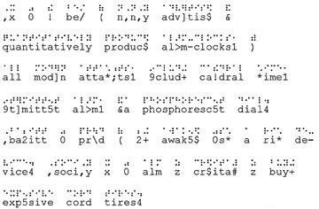

| |
Sample Text in
BrailleThe first paragraph of Chapter 3
of Sincair Lewis' Babbit:
It was the best of nationally advertised and
quantitatively produced alarm-clocks, with all
modern attachments, including cathedral chime,
intermittent alarm, and a phosphorescent dial.
Babbitt was proud of being awakened by such a rich
device. Socially it was almost as creditable as
buying expensive cord tires.

Under each Braille line is the "Braille ASCII"
version - simply the Braille characters mapped onto
7-bit ASCII codes. You'll notice that the character
mapped to "5" is the contraction "<en>"; the
character mapped to "/" is the contraction
"<st>"; and the the character mapped to ","
means "the next word is capitalized" when it precedes
a word, but on the inside of words, it's a prefix for
particular abbreviations (e.g., it plus "y" means
"-ally").
The e-text of all of Babbit is 717K unencoded
(ASCII), and 581K encoded (grade-2 Braille, in
Braille ASCII) - a size savings of 19%.
|